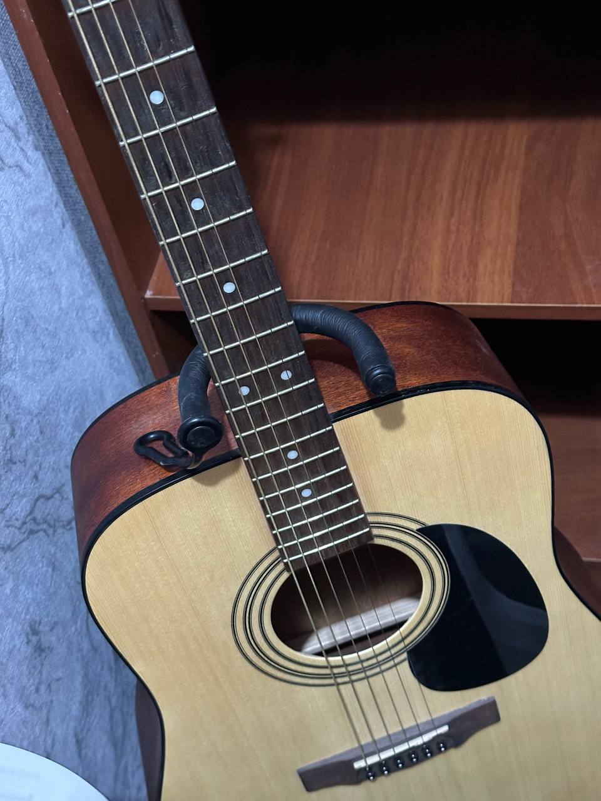

Я уже 4 года играю на гитаре (фото гитары прилагается). За эти 4 года я выучил множество различных песен. Больше всего мне нравится играть лирические песни, они лучше всего заходят в компании и заставляют задуматься. Играть я учился сам по урокам из интернета. Мои любимые музыкальные исполнители: ssshhhiiittt, Red Hot Chili Peppers, конец солнечных дней, Noize MC, Земфира. У меня не очень хорошо получается играть мелодии, поэтому в данный момент я чаще пытаюсь играть именно их.
